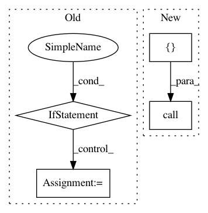

5557a2e4143f7ec707daf9ae094db84eb91b9d1b,tools/nni_cmd/command_utils.py,,install_package_command,#Any#,38
Before Change
def install_package_command(package_name):
"""install python package from pip"""
//TODO refactor python logic
if sys.platform == "win32":
cmds = "python -m pip install --user {0}".format(package_name)
else:
cmds = "python3 -m pip install --user {0}".format(package_name)
call(cmds, shell=True)
def install_requirements_command(requirements_path):
"""install requirements.txt"""
After Change
package_name: str
The name of package to be installed.
call(_get_pip_install() + [package_name], shell=False)
def install_requirements_command(requirements_path):
In pattern: SUPERPATTERN
Frequency: 3
Non-data size: 4
Instances
Project Name: microsoft/nni
Commit Name: 5557a2e4143f7ec707daf9ae094db84eb91b9d1b
Time: 2019-10-22
Author: v-yugzh@microsoft.com
File Name: tools/nni_cmd/command_utils.py
Class Name:
Method Name: install_package_command
Project Name: PetrochukM/PyTorch-NLP
Commit Name: eb61fee854576c8a57fd9a20ee03b6fcb89c493a
Time: 2019-05-16
Author: petrochukm@gmail.com
File Name: torchnlp/download.py
Class Name:
Method Name: _maybe_extract
Project Name: microsoft/nni
Commit Name: 5557a2e4143f7ec707daf9ae094db84eb91b9d1b
Time: 2019-10-22
Author: v-yugzh@microsoft.com
File Name: tools/nni_cmd/command_utils.py
Class Name:
Method Name: install_requirements_command